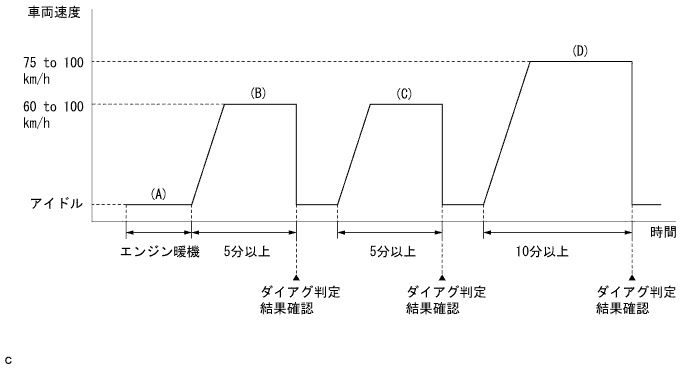
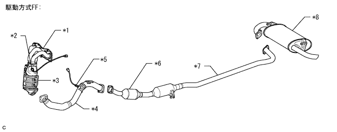
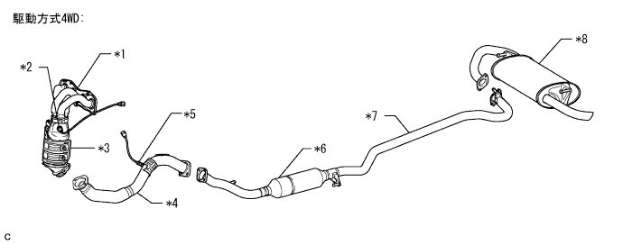
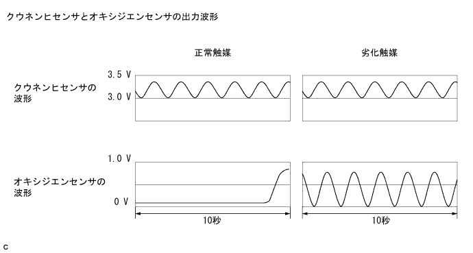
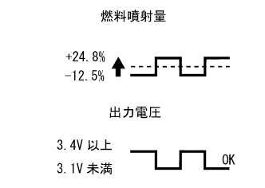

DTC P0420/94 Catalyst Deterioration 1 |
| DTC No. SAE/TCCS | P0420/94 | ||
|---|---|---|---|
| DTC Detection Condition | Diagnosis Condition | When all of the following conditions are met
| |
| Abnormal Condition | Catalyst OSC value is equal to or less than judgment value | ||
| Malfunction Duration | 30 seconds or more | ||
| Trip Count | 2 trip | ||
| Detection Method | Detected 1 times during 1 trips (no detection after judgment) | ||
| Sensors Used for Detection | Main |
| |
| Sub |
| ||
| Inspection Area |
| ||

))
| *1 | Exhaust Manifold Converter Sub-assembly | *2 | Air Fuel Ratio Sensor |
| *3 | Front Catalyst | *4 | Exhaust Pipe Assembly Front |
| *5 | Oxygen Sensor | *6 | Rear Catalyst |
| *7 | Exhaust Pipe Assembly CTR | *8 | Exhaust Tail Pipe Assembly |

| *1 | Exhaust Manifold Converter Sub-assembly | *2 | Air Fuel Ratio Sensor |
| *3 | Front Catalyst | *4 | Exhaust Pipe Assembly Front |
| *5 | Oxygen Sensor | *6 | Rear Catalyst |
| *7 | Exhaust Pipe Assembly CTR | *8 | Exhaust Tail Pipe Assembly |


| Item | Fuel Injection Volume | Air fuel ratio sensor and oxygen sensor output voltage |
|---|---|---|
| [A/F Sensor Voltage B1S1] | +24.8% increase | Less than 3.1 V (rich condition) |
| [A/F Sensor Voltage B1S1] | -12.5% decrease | 3.4 V or more (lean condition) |
| [O2 Sensor Voltage B1S2] | +24.8% increase | 0.55 V or more (rich condition) |
| [O2 Sensor Voltage B1S2] | -12.5% decrease | Less than 0.4 V (lean condition) |
| Case | Air fuel ratio sensor output voltage | Oxygen sensor output voltage | Inspection Area |
|---|---|---|---|
| 1 |  |  | - |
| 2 |  | |
|
| 3 | |
| |
| 4 | | |
|
| Step 1 | Read DTC |
Connect SST (TaSCAN) to DLC3.
Turn IG ON.
Check the DTCs by following the SST (TaSCAN) screen display. (see)
| Result | Proceed to |
|---|---|
| Only P0420/94 is output | A |
| Codes other than P0420/94 are also output | B |
|
| ||||
| A | |
| Step 2 | Exhaust Gas Leak Inspection |
Check that there are no exhaust leaks from the exhaust pipe joints and sensor installation areas.
|
| ||||
| OK | |
| Step 3 | Read TaSCAN Data (A/F Sensor Voltage B1S1) |
Connect SST (TaSCAN) to DLC3.
Start the engine, turn all accessory switches OFF, and warm up the engine until the engine coolant temperature stabilizes. (Engine coolant temperature is 75°C or higher)
While depressing the accelerator pedal 60 % or more, maintain the engine speed at 2500 r/min for approximately 3 minutes to warm up the air fuel ratio sensor.
Following the SST (TaSCAN) screen display, select [ECU Data Monitor] - [A/F Sensor Voltage B1S1] and [Engine Speed].
Measure the A/F sensor voltage 3 times each time the engine reaches the following conditions.
While idling (measure for 30 seconds or more) [A]
Engine speed approximately 2500 r/min (no sudden change in engine speed) [B]
Raise the engine speed to 4000 r/min, then quickly release the accelerator pedal so that the throttle valve is fully closed. [C]
| Item Name | Condition | Standard | HINT |
|---|---|---|---|
| A/F Sensor VoltageB1S1 | [A] and [B] | Fluctuates around 3.3 V | 3.1 to 3.5 V |
| [C] | Rises to 3.8 V or more | occurring during engine deceleration (during fuel cut) |

| Result | Proceed to |
|---|---|
| Air fuel ratio sensor voltage value is normal | A |
| Air fuel ratio sensor voltage value is abnormal | B |
|
| ||||
| A | |
| Step 4 | Read TaSCAN Data (O2 Sensor Voltage B1S2) |
Connect SST (TaSCAN) to DLC3.
Turn IG ON.
Start the engine, turn all accessory switches OFF, and warm up the engine until the engine coolant temperature stabilizes. (Engine coolant temperature is 75°C or higher)
Following the SST (TaSCAN) screen display, select [ECU Data Monitor] - [O2 Sensor Voltage B1S2].
While depressing the accelerator pedal, maintain 2500r/min for approximately 3 minutes to warm up the oxygen sensor.
Read [O2 Sensor Voltage B1S2] at approximately 2500 r/min. (A)
Read [O2 Sensor Voltage B1S2] when racing the engine several times at high speed (4000 r/min). (B)
| Display Item | Specified Condition |
|---|---|
| O2 Sensor VoltageB1S2 | A voltage of 0.55 V or more is output during (A) |
| A voltage of 0.4 V or less is output during (B) |
| Result | Proceed to |
|---|---|
| NG | A |
| OK (P0420/94 output) | B |
|
| ||||
| A | |
| Step 5 | Replace Oxygen Sensor |
for reference.
|
| ||||
| Step 6 | Replace Air Fuel Ratio Sensor |
for reference.
|
| ||||
| Step 7 | Replace Exhaust Manifold Converter Sub-assembly (Front Catalyst) |
for reference.| NEXT | |
| Step 8 | Replace Exhaust Pipe Assembly Center (Rear Catalyst) |
for reference.| NEXT | |
| Step 9 | Clear DTC |
Connect SST (TaSCAN) to DLC3.
Turn IG ON.
Following the SST (TaSCAN) screen display, clear the DTCs. (see)
| NEXT | |
| Step 10 | Perform Operation Check Drive |
Connect SST (TaSCAN) to DLC3.
Start the engine, turn all accessory switches OFF, and warm up the engine until the engine coolant temperature stabilizes. (Engine coolant temperature 75°C or higher) (A)
Drive the vehicle at 60 to 100 km/h for 5 minutes or more. (B)
Following the SST (TaSCAN) screen display, select main menu [Diagnosis] - diagnosis menu [Powertrain] - [TCCS] - system diagnosis menu [DTC Judgment Result Check] - [Check by DTC].
On the next screen, enter the DTC to be checked.
Check the DTC judgment result.
| Result | Proceed to |
|---|---|
| NG | A |
| OK | B |
| Display Item | Description |
|---|---|
| OK |
|
| NG |
|
| Judging |
|
| Judgment not possible |
|
|
| ||||
| A | ||
| ||